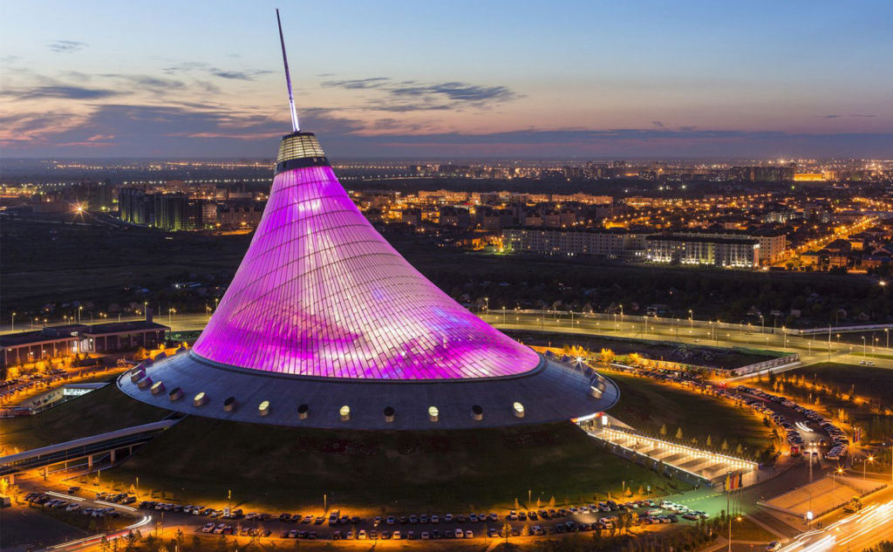
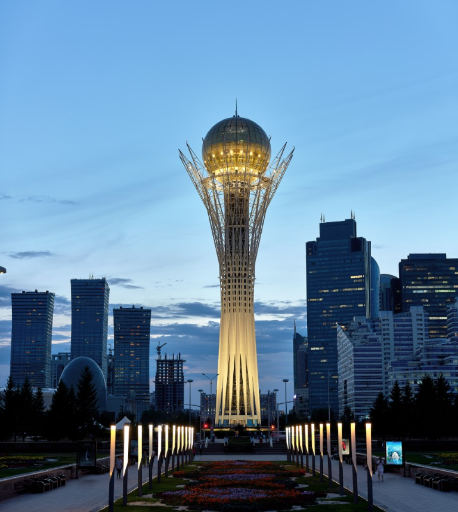
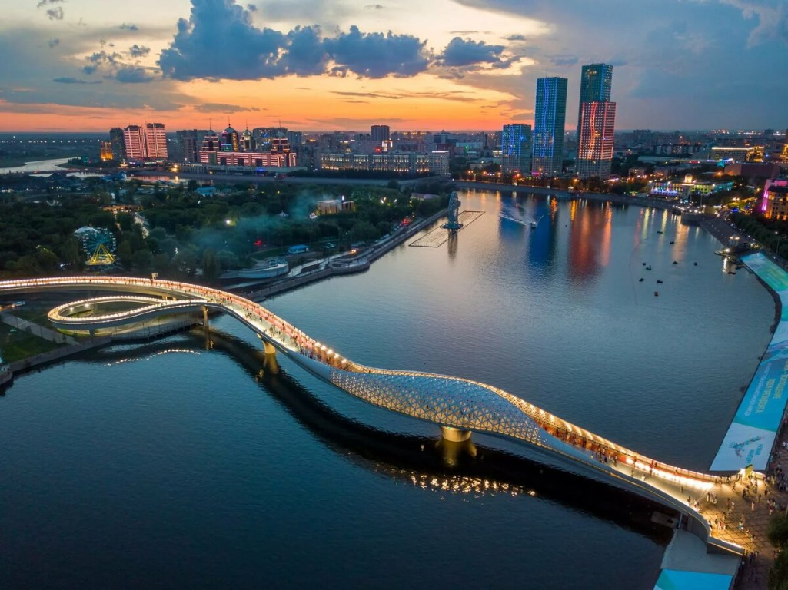

Астана
Северное сердце Казахстана · Футуризм и степные просторы
Знаковые места

Хан-Шатыр
Главный символ столицы: со смотровой площадки в золотой сфере виден весь город. Высота монумента — 97 метров, а число отсылает к 1997 году, когда Астана стала столицей Казахстана.

Байтерек
Гигантский прозрачный шатёр высотой около 150 метров спроектировал архитектор Норман Фостер. Внутри находятся магазины, развлечения и даже крытый пляж — укрытие от степной жары и зимнего холода.

Набережная Ишима
Река делит столицу на берега, соединённые мостами и прогулочными маршрутами. На закате набережная особенно красива: огни города отражаются в воде.
🏛 Главные символы
Монумент «Байтерек» с золотым шаром и футуристический шатёр
«Хан Шатыр» в центре столицы.
🌲 Природа рядом
Государственный национальный природный парк «Бурабай» (Боровое) с сосновыми борами, скалами и озёрами.
🎒 Особенности
Открытая степная местность с выраженными ветрами — возьмите с собой ветрозащитную одежду.